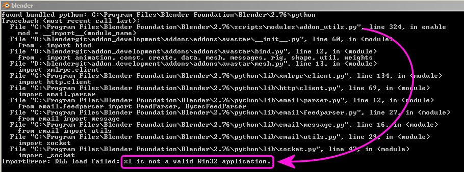

Python错误¶
预编译库¶
虽然不是很常见的做法，但是Python插件可以使用他们自己的预编译库进行分发。与常规Python脚本不同，这些脚本在不同平台之间不可移植。
该库可能与您的Blender安装不兼容(尝试加载为不同版本的Python构建的库，或在64位系统上加载32位库)。
如果附加组件包含 .pyd 或 .so 文件, 请检查该分发版本是否与您的操作系统兼容。
平台特定¶
Windows¶
混合的Python库(DLL)¶
如果Python发生错误，或者您的附加组件在启用错误时失败，例如: ... 不是有效的Win32应用程序 。

Python traceback模块 。¶
这可能是由于 Python 库中的某些不一致造成的。虽然Blender附带了自己捆绑的 Python 解释器, 但重复的、不兼容的库可能会导致问题。
要找出哪个Python库导致问题，请检查错误消息。
他的报告通常在 traceback的底部行附近。有了上面的错误，你会发现问题是在尝试导入 _socket 时引起的。这对应于名为 _socket.py 或 _socket.pyd 的文件。
为了帮助解决这个问题，可以将以下脚本粘贴到文本编辑器中并运行以检查搜索路径中的重复库。 (输出将显示在 Command Line Window 中)。
import os
import sys
# Change this based on the library you wish to test
test_lib = "_socket.pyd"
def GetSystemDirectory():
from ctypes import windll, create_string_buffer, sizeof
GetSystemDirectory = windll.kernel32.GetSystemDirectoryA
buffer = create_string_buffer(260)
GetSystemDirectory(buffer, sizeof(buffer))
return os.fsdecode(buffer.value)
def library_search_paths():
return (
# Windows search paths
os.path.dirname(sys.argv[0]),
os.getcwd(),
GetSystemDirectory(),
os.environ["WINDIR"], # GetWindowsDirectory
*os.environ["PATH"].split(";"),
# regular Python search paths
*sys.path,
)
def check_library_duplicate(libname):
paths = [p for p in library_search_paths()
if os.path.exists(os.path.join(p, libname))]
print("Library %r found in %d locations:" % (libname, len(paths)))
for p in paths:
print("- %r" % p)
check_library_duplicate(test_lib)